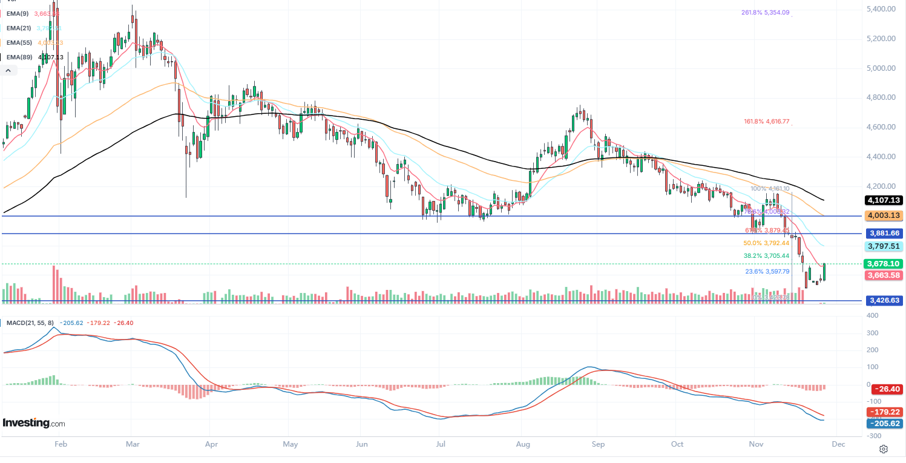
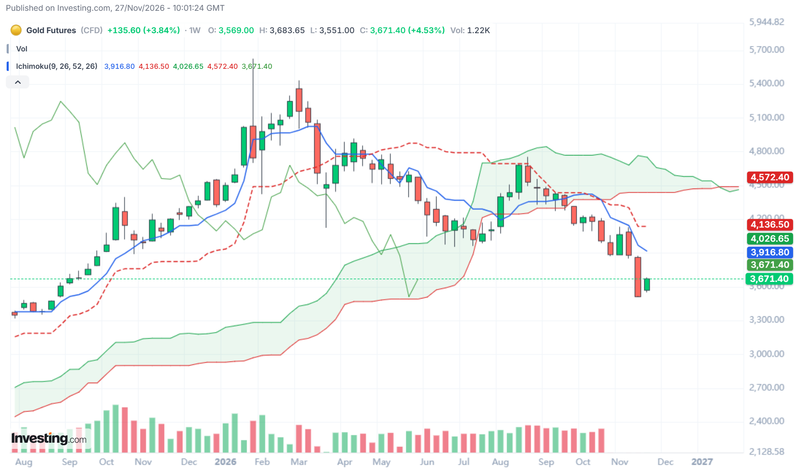
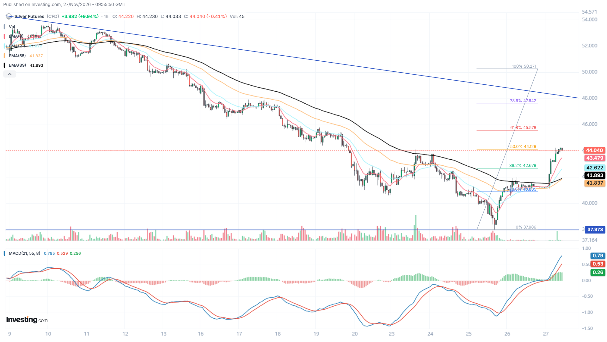
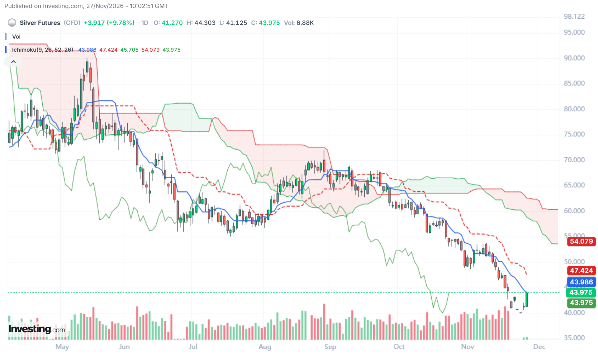
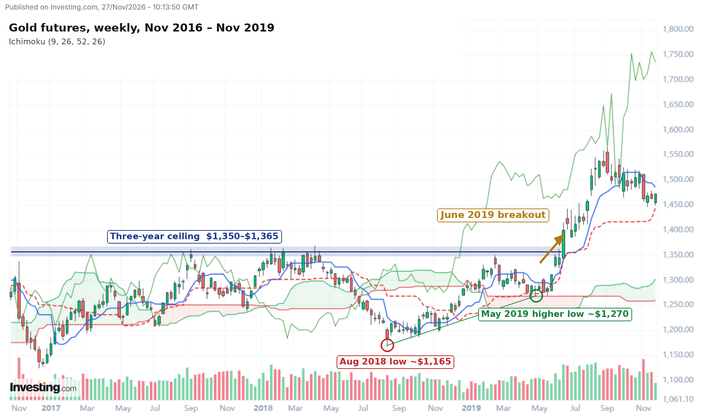

The five charts behind the 27 November 2026 analysis of gold's rebound from a 15-month low. All charts were made with Investing.com's charting tools.

1. Gold futures, daily. Friday's bar reclaims the 9-day EMA; the 50% retracement and the 21-day EMA meet near $3,795.

2. Gold, weekly Ichimoku. Price is far below the cloud, and the lagging span runs into the $4,000 zone of 26 weeks ago.

3. Silver, 1-hour. A potential inverse head and shoulders, with its neckline at the 50% retracement near $44.10. The measured move points to the $50.27 high.

4. Silver, daily Ichimoku. Friday's rally stops at the Tenkan-sen, and the lagging span points to the $49–$50 zone of 26 sessions ago.

5. Gold, weekly, 2016–2019. A low, a higher low, then a breakout above the cloud and the old ceiling.